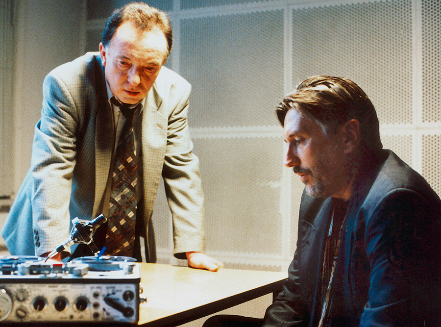

< 912. Folge >
Zwischen zwei Welten
Erstsendung:
21. April 2014
Sendelänge
89:03
Drehbuch
Matthias Tuchmann, Boris Dennulat, Erol Yesilkaya
Regie
Florian BaxmeyerRedaktion
Annette StrelowDrehort
LuzernSchwer verletzt versucht Müllmann Maik Decker mit einem Müllwagen zu fliehen. Doch es ist zu spät. Der Müllwagen verunglückt und Maik stirbt an seinen Stichverletzungen. Die Bremer Kommissare Inga Lürsen und Stedefreund übernehmen den Fall, durchleuchten das Umfeld des Opfers und sind zunehmend irritiert: Die Kollegen im Entsorgungsunternehmen scheint Deckers Tod nicht sonderlich zu wundern. Nach und nach begreifen sie, dass das Motiv komplex ist: Es geht um den Müll der Stadt, eine Straße voller Ex-Häftlinge – und einen Mann, der alle Fäden in der Hand hält.
Nächste Wiederholungen
| Datum | Sender |
|---|---|
| 19.05.2014 | ORF2 |
| 18.05.2014 | ARD |
| 20.05.2014 | ARD |
| 20.05.2014 | ORF2 |
Besetzung:
Hauptkommissarin Inga Lürsen - Sabine PostelHauptkommissar Nils Stedefreund - Oliver Mommsen
Helen Reinders - Camilla Renschke
Dr. Katzmann [Pathologe] - Matthias Brenner
Kriminalassistent Karlsen - Winfried Hammelmann
Sascha - Jacob Matschenz
Uwe Frank [Papa] - Roeland Wiesnekker
Tarik - Patrick Abozen
Yvonne - Genija Rykova
Pavel Symanek - Hendrik Arnst
Trude - Maria Hartmann
Abels - Patrick von Blume
Vossler - Bernd Stegemann
Han - Yu Fang
N.N - Sebastian Kautz
N.N - Heiko Dörfer
N.N - Lars Appelt